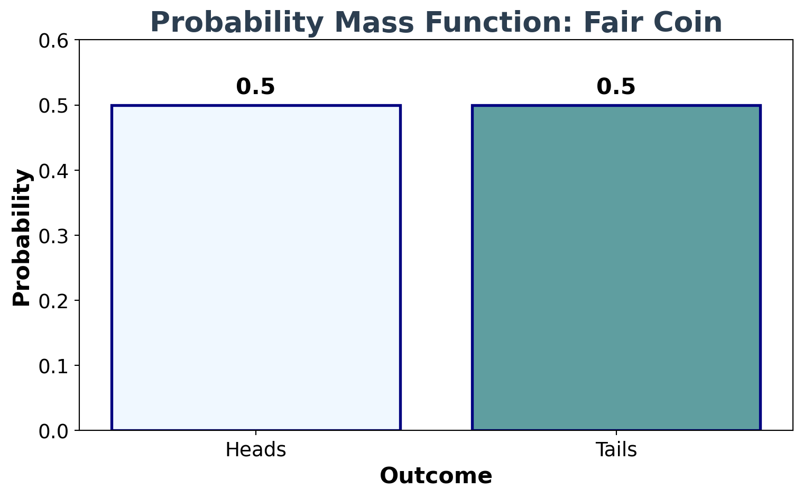
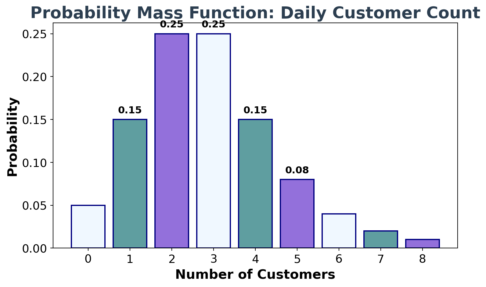
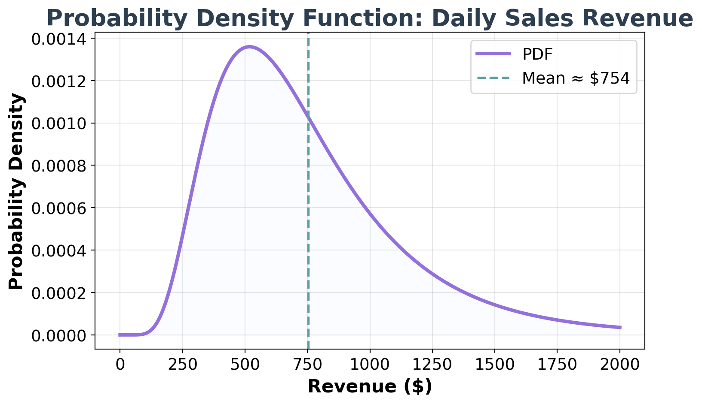
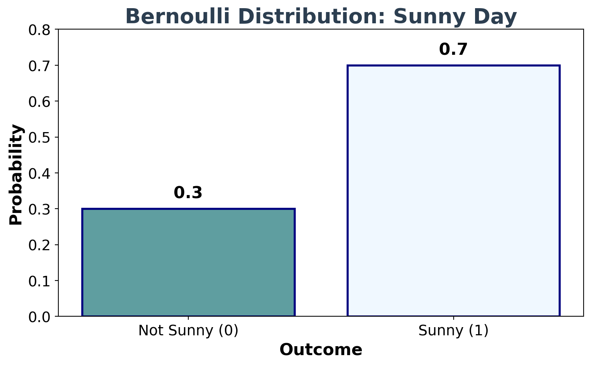
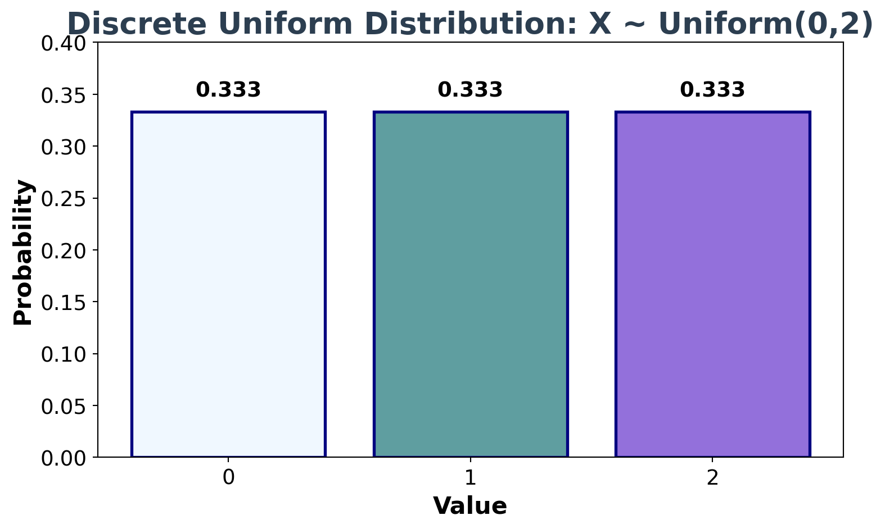
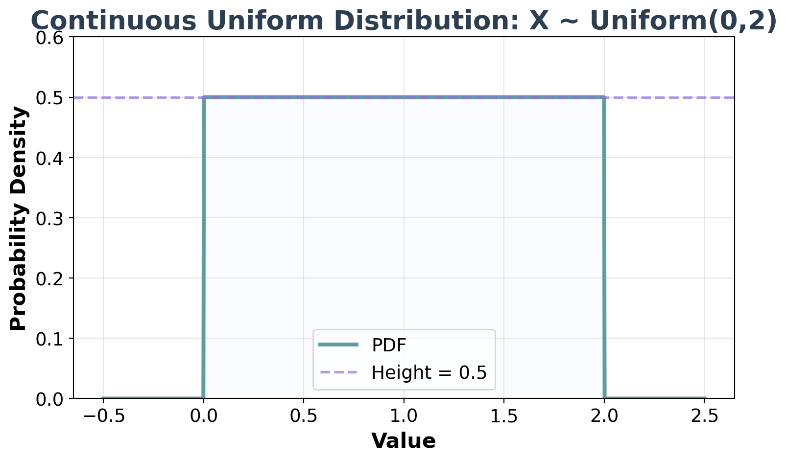
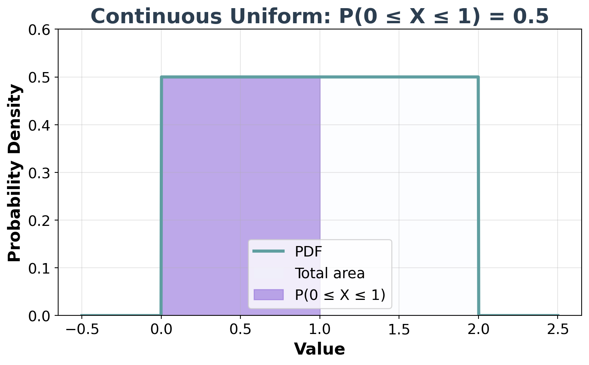
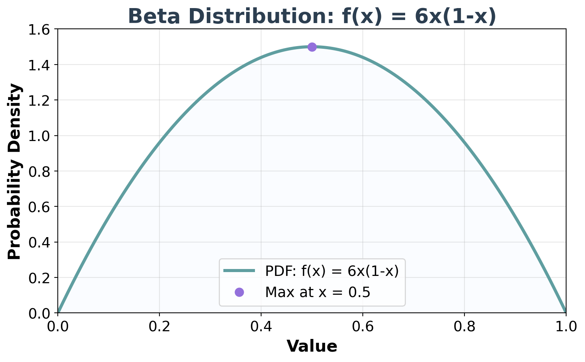
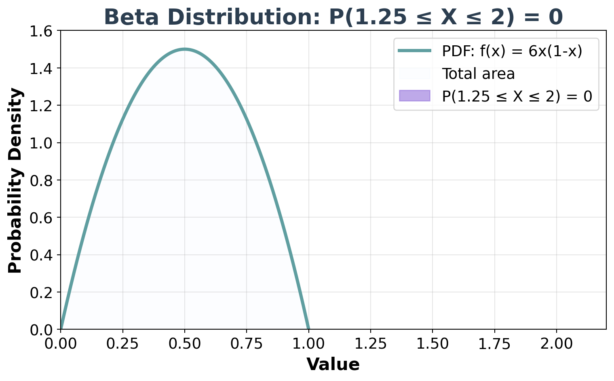
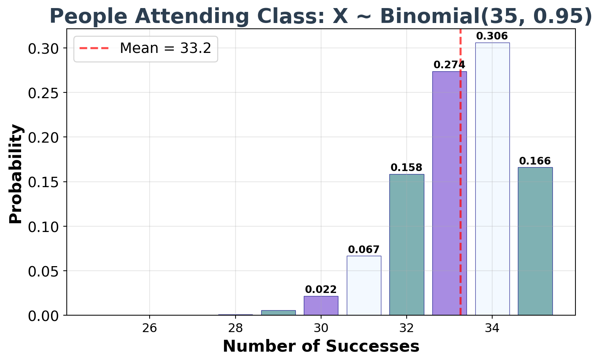

Random Variables
Basic Building Block for Uncertainty Modeling
What is a Random Variable?
Random Variable (informally): A measurement whose value is subject to uncertainty or randomness.
Types of Random Variables
Discrete vs. Continuous
Discrete Random Variables: - Countable outcomes (1, 2, 3, …) - Examples: Number of customers, coin flips
Continuous Random Variables: - Uncountable outcomes (any value in a range) - Examples: Temperature, height, time
Random Variables (Mathematically)
Mapping Real-World Outcomes to Numbers
| Real-World Outcome | Numerical Value |
|---|---|
| Sunny day | 1 |
| Not sunny day | 0 |
Random Variable: A function that maps each possible outcome to a real number
Mathematical Formalism
Random Variable Definition
A random variable \(X\) is a function that maps the sample space \(\Omega\) to the real numbers:
\[X: \Omega \rightarrow \mathbb{R}\]
Example:
- \(\Omega = \{\text{sunny}, \text{not sunny}\}\)
- \(X(\text{sunny}) = 1\)
- \(X(\text{not sunny}) = 0\)
Mathematical Formalism (Continued)
Key Properties
A random variable \(X\) is a function that maps the sample space \(\Omega\) to the real numbers:
\[X: \Omega \rightarrow \mathbb{R}\]
Key Properties:
- Each outcome gets exactly one number
- Different outcomes can map to the same number
- We can now do mathematical analysis on the numbers
Probability Distributions
Spreading Plausibility Over Outcomes
Key Insight: Random variables are most useful when we assign probabilities to each outcome.
Example - Weather Random Variable:
- \(X(\text{sunny}) = 1\) with probability \(P(X = 1) = 0.7\)
- \(X(\text{not sunny}) = 0\) with probability \(P(X = 0) = 0.3\)
Total probability must sum to 1: \(0.7 + 0.3 = 1.0\)
Discrete Probability Distribution
Example: Ice Cream Sales
| Outcome | Value | Probability |
|---|---|---|
| High sales (>100) | 1 | 0.6 |
| Low sales (≤100) | 0 | 0.4 |
Properties:
- Each probability ≥ 0
- Probabilities sum to 1: \(0.6 + 0.4 = 1.0\)
Continuous Probability Distribution
Example: Temperature
For continuous random variables, we use probability density functions (PDFs) to show how we allocate plausibility:
- Temperature \(T\) can be any of the infinite values in a range (e.g., 60°F to 90°F)
- \(P(T = 75°F) = \frac{1}{\infty} \approx 0\) (exact values have zero probability)
- Instead: \(P(70°F < T < 80°F) = 0.3\) (ranges have positive probability)
Key: Area under the PDF curve represents probability
Discrete Example: Coin Flips

Discrete Example: Customer Count

Continuous Example: Temperature

Continuous Example: Sales Revenue

Bernoulli Distribution: Table View
Sunny Day Example
| Outcome | Value | Probability |
|---|---|---|
| Sunny day | 1 | 0.7 |
| Not sunny day | 0 | 0.3 |
Properties:
- Binary outcomes (0 or 1)
- Probabilities sum to 1: \(0.7 + 0.3 = 1.0\)
- This is a Bernoulli distribution
Bernoulli Distribution: Mathematical Definition
Academic Paper Style
A random variable \(X\) follows a Bernoulli distribution with parameter \(p\) if:
\[X \sim \text{Bernoulli}(p)\]
where:
- \(P(X = 1) = p\) (probability of “success”)
- \(P(X = 0) = 1-p\) (probability of “failure”)
Academic Paper Style
\[X \sim \text{Bernoulli}(p)\]
where:
- \(P(X = 1) = p\) (probability of “success”)
- \(P(X = 0) = 1-p\) (probability of “failure”)
For our sunny day example:
- \(X \sim \text{Bernoulli}(0.7)\)
- \(P(X = 1) = 0.7\) (sunny day)
- \(P(X = 0) = 0.3\) (not sunny day)
Bernoulli Distribution: Graph View

Bernoulli Distribution: Node View
\[X \sim \text{Bernoulli}(0.7)\]
Joint Distributions
Joint Distribution:
\[P(X = x, Y = y)\]
Example:
\[P(X = 0, Y = \text{low}) = 0.25\] \[P(X = 0, Y = \text{high}) = 0.05\]
Key Insight: We model both variables together to capture their relationship.
Further Learning
Let’s Practice Together!
📊 Interactive Practice
Ready to test your understanding of random variables?
🎯 Join Poll - Random Variables Practice
We’ll work through examples together in real-time
Appendix
Causal Relationships: Two Different Stories
Story 1: Direct Causation
Interpretation: Smoking directly causes lung cancer.
Story 2: Common Cause For Smoking and Lung Cancer
Interpretation: Genetics influences both smoking behavior and lung cancer risk.
Key Insight: Correlation ≠ Causation
The Same Data, Different Stories
Both DAGs can explain the same observed correlation between smoking and lung cancer, but they have very different implications:
Story 1 (Direct Causation): - Stop smoking → Reduce lung cancer risk - Intervention on smoking directly affects outcome
Story 2 (Common Cause): - Stop smoking → May not reduce lung cancer risk - The genetic predisposition remains unchanged
🎯 Critical Thinking
Understanding the underlying causal structure is essential for making effective interventions and policy decisions.
Appendix: Probability Distributions
Discrete Uniform Distribution (0,2)

Continuous Uniform Distribution (0,2)

Continuous Uniform: Shaded Area P(0 ≤ X ≤ 1)

Beta Distribution: f(x) = 6x(1-x)

Beta Distribution: Shaded Area P(1.25 ≤ X ≤ 2)

Binomial Distribution: n=35, p=0.95
